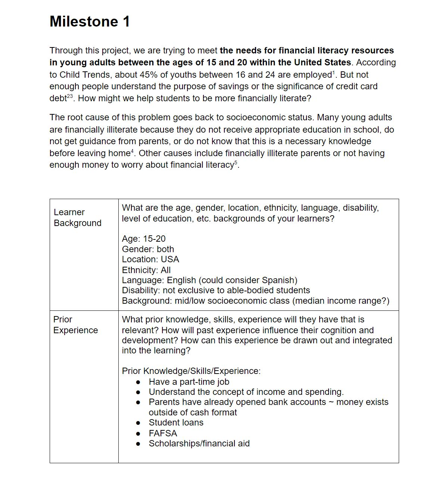
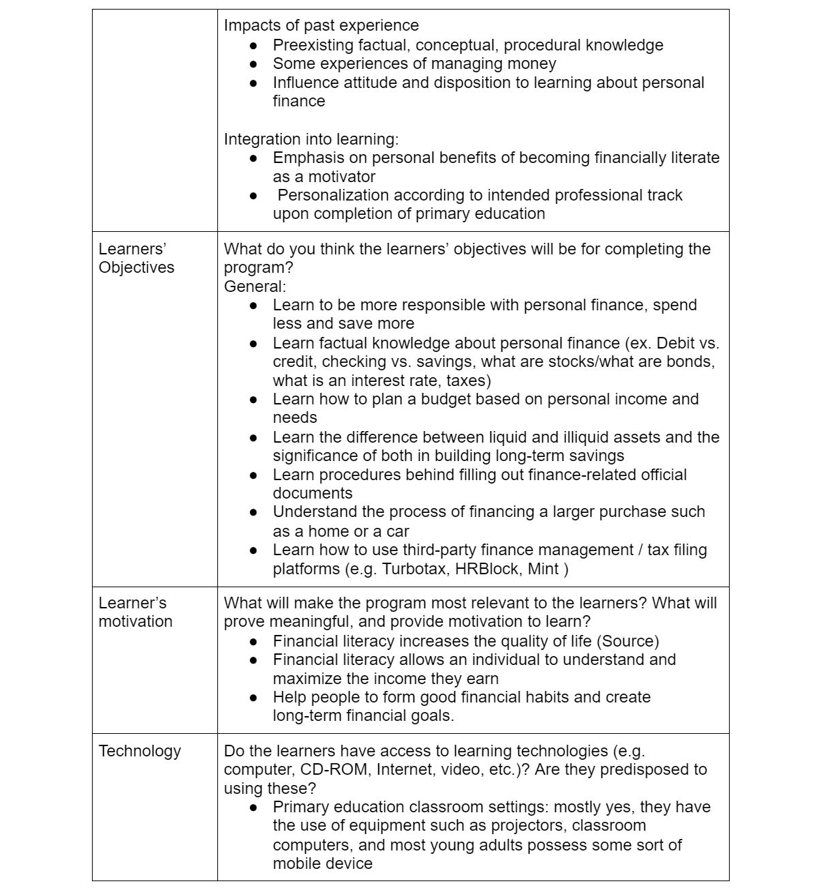
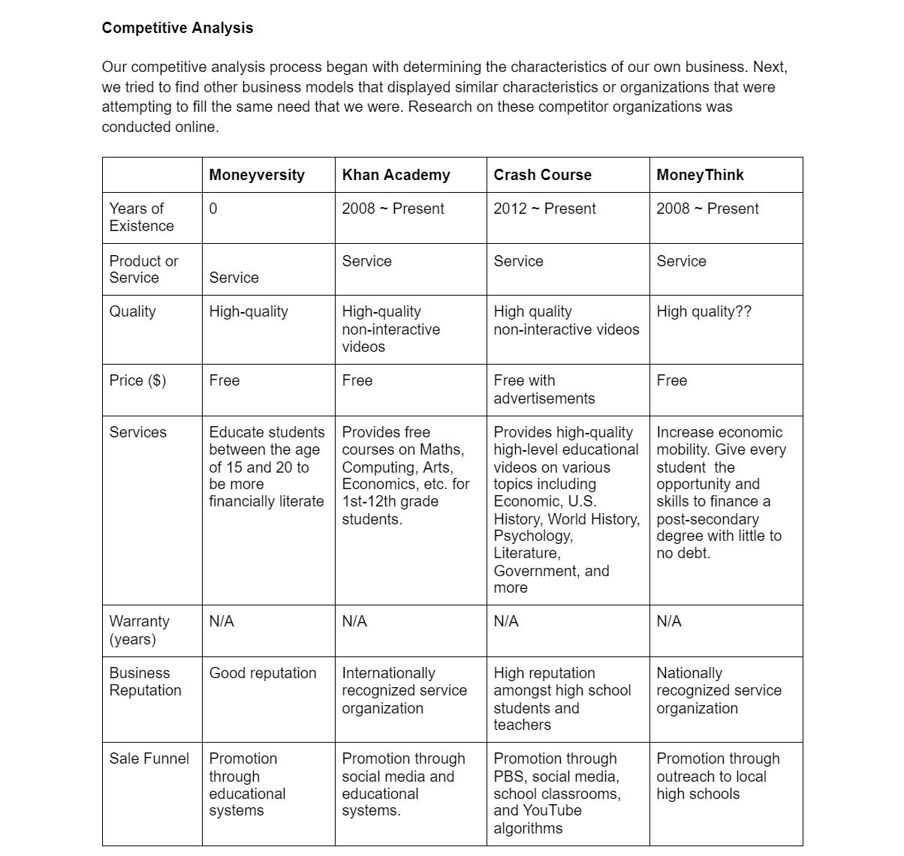
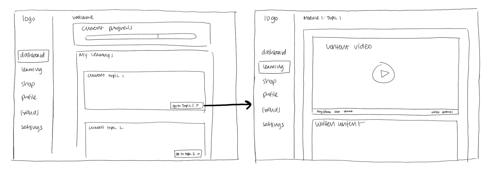

Moneyversity
Improving financial literacy in college students through multimedia learning design
Team
Anna Yuan
Jamie Park
Introduction
Moneyversity is a game-based learning platform that aims to help college-age young adults improve their financial literacy skills. The curriculum covers a wide range of topics from budgeting to investments. During the learning process, each student is paired up with a virtual character who is an alien exchange student needing to learn financial literacy in order to adjust to life on Earth. The student serves as the alien's financial advisor and helps their alien make smart financial decisions.
This was a semester-long project completed over Fall 2020 semester in The Role of Technology in 21st Century Learning, taught by Dr. Amy Ogan from Carnegie Mellon's HCI Institute.
My team members and I created this entire project ourselves from ideation to the final prototype, and we collaborated on all parts of the project.
QUESTION
How can we use multimedia technology and learning science principles to motivate young adults to learn about financial literacy?
Ideation
My teammates and I were tasked with creating an educational platform that addresses a societal need of our choice. We chose financial literacy because it is an issue that has a very tangible impact on the lives of young adults, but is often overlooked in formal education systems.
We began by defining our problem, building our user profile, and conducting competitor analyses. This helped us to narrow down the exact goals of our platform and laid the foundations for our user flow and preliminary user interviews.
   Learner profile and competitive analysis
 User flow
User flow
Preliminary User Testing
In total, we completed two rounds of user interviews. Our preliminary interview was aimed at informing our user flow and construction of the Moneyversity curriculum, while our second round of interviews was designed to identify opportunities for improvement in our interface and application of motivational theories.
Our first round user interview mainly consisted of content-related and learning style questions. Broadly, we wanted to know what topics in financial literacy our target users were most interested in learning, whether they had been taught these concepts before, whether they had any interest in learning about financial literacy, and their preferred methods of content delivery.

 Interview script and main findings
Interview script and main findings
INSIGHTS FROM PRELIMINARY USER INTERVIEWS
1. Many young adults are unfamiliar with financial literacy but consider it important.
100% of our interviewees said they had never encountered financial literacy in a formal education context. However, they recognized that financial literacy is an important skill for their future and expressed interest in becoming more financially literate.
2. Our users have a wide range of financial literacy skill levels. The lack of formal education in financial literacy meant that our users' existing knowledge (if they knew anything at all) was from informal sources like relatives/guardians or online articles. Some of our users knew nothing, some knew the basics, while others probably knew more than us.
3. Users indicated an overwhelming preference for multimedia learning. Our interviewees said that they preferred to learn from interactive and visual online platforms. One user cited Khan Academy as an example.
Low/Mid-Fidelity Prototype
We used the insights gained from our preliminary user testing to create our wireframe and first prototype, which ended up closer to a mid-fidelity prototype by the time we were done.

Panels from our wireframe

 Panels from our low-fi/mid-fi prototype
Panels from our low-fi/mid-fi prototype
We incorporated elements like multimedia learning, learning by teaching, and in-game rewards to increase motivation.
User Testing on Prototype
Our second round of user testing was focused on fine-tuning our mid-fidelity prototype and identifying opportunities for increased learner engagement and motivation.
We decided to take the users on a walkthrough of our prototype and allow them to give their own insights first, then asked a series of targeted questions aimed at measuring our platform's effectiveness.
We also incorporated a series of learning science principles that we covered in class.


INITIAL PROTOTYPE PROBLEMS AND SOLUTIONS
1. Users want to adjust the curriculum to their skill level.
Our original design was aimed at providing content for all skill levels. Inevitably, our more financially literate users found some of our content redundant. However, we also wanted to account for overconfident users that might end up skipping content that they actually needed to learn.Solution: We decided to include "diagnostic pre-tests" at the start of each module that allow the user to determine their level of mastery over a certain topic. The user's performance on this pre-test would give them corresponding options, such as (a) skipping the module entirely (b) skipping some parts of the module or (c) continuing on to the module.
2. Users want to reference past modules easily.
Many of our users didn't have a set source for financial literacy information, meaning that Moneyversity would become their go-to whenever they needed help with personal finance.
Our initial design only accounted for the user's journey and eventual mastery of each module, without a convenient method of review and reference.
If users wanted to review past content, they'd have to go through the modules again.
Solution: We created a reference dictionary of past terms that could be sorted by alphabetical order, module, or term search. We also made a cute little helper bot to help users quickly locate the information they need.
3. Users want additional resources beyond the scope of the curriculum.
Some of our test users expressed a particular interest in personal finance topics that went beyond the scope of the Moneyversity curriculum.
On the first prototype, there was no clear path to next-level knowledge: our users would finish a module, then move on to the next.
This made it a little discouraging for users who wanted to learn more, but didn't know how.
Solution: We created an Additional Resource column within each module, which would link users to higher-level information on the module topics from various reputable sources outside of Moneyversity.
Final Prototype
Our final prototypes incorporated several new elements to address the issues highlighted in our user tests, such as the reference dictionary, helper bot, and diagnostic pre-test.

 Dashboard and learning progress
Dashboard and learning progress 
 Getting started
Getting started
 Learning content delivery
Learning content delivery
 Decision-making exercises and feedback
Decision-making exercises and feedbackLEARNINGS
Moneyversity was a really formative experience for me because I oversaw the whole process of creating the platform, from initial research to user testing to iterative prototyping. I also really enjoyed getting to know and working with my amazing teammates over the course of the semester. Here are some of my end-of-project takeaways related to UX research and design processes.
Considering non-linear user flows
Before working on Moneyversity, I'd learned to make simple user flows that go from start to finish. However, our users pointed out that they'd be returning to Moneyversity whenever they needed to reference a past learning. There's a different set of considerations for new users and old users, and a good online platform leverages both.
Designing flexible user flows for a diverse user base
A lot of users really dislike being forced to do things they don't feel the need to do. Sometimes, they don't feel the need to do things they should do. Redundancy is inevitable, though, especially when you're designing for users that span a diverse range of demogrpahics. I learned to help users in identifying and highlighting the essentials, while offering them more flexibility in non-essential areas.